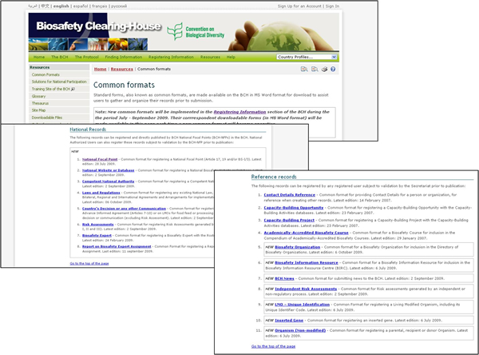

Los Formatos comunes se utilizan para normalizar la estructura y la organización de la información de las bases de datos del CIISB. La utilización de estos formatos mejora la eficiencia del Portal Central del CIISB y aseguran el fácil acceso a la información.
Los formatos comunes constituyen la base de los formularios de entrada en línea del Centro de Gestión.

La página de Formatos Comunes proporciona enlaces a los documentos MS Word de los formatos comunes para las siguientes categorías:
1. Registros Nacionales
-
Punto Focal Nacional
-
Base de datos Nacional de Bioseguridad
-
Autoridades Nacionales Competentes
-
Leyes de Bioseguridad, Regulaciones, Guías y Acuerdos Regionales e Internacionales
-
Decisiones de País y otras comunicaciones
-
Evaluación de Riesgo
-
Experto en Bioseguridad
-
Informe de la asignación del Experto en Bioseguridad
2. Registros de Referencia
-
Detalles de contacto
-
Oportunidades de Creación de Capacidad
-
Proyectos de Creación de Capacidad
-
Organizaciones de Bioseguridad
-
Cursos de Bioseguridad con acreditación académica
-
Centro de Recursos de Información de Bioseguridad (CRIB)
-
Noticias del CIISB
-
Evaluación de Riesgo Independiente
-
OVM - identificación exclusiva
-
Genes insertados
-
Organismos (no modificados)